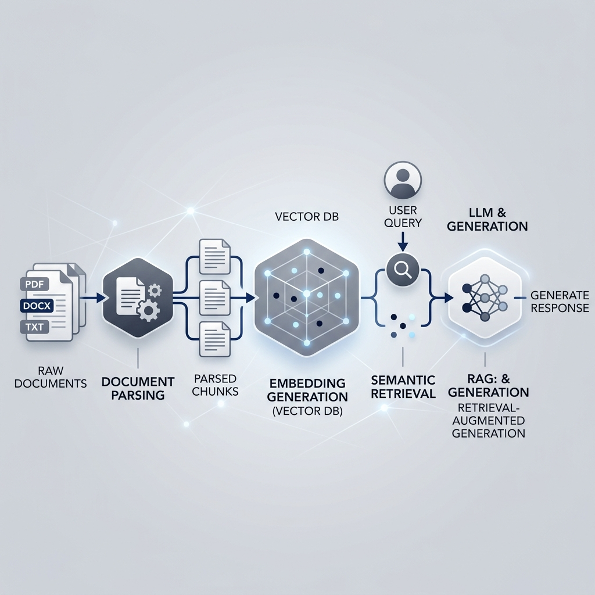
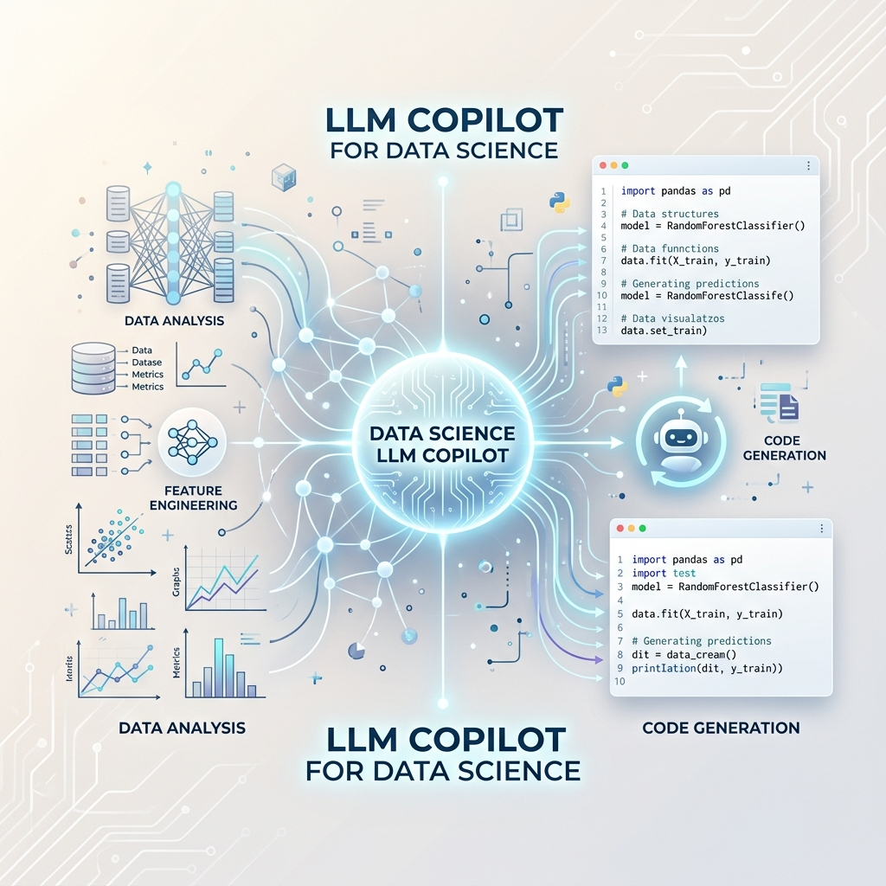

I am an MS Data Science candidate at the University of Maryland (GPA: 3.86/4.0), passionate about Natural Language Processing, Retrieval-Augmented Generation (RAG), and applied Machine Learning research.
My expertise lies in building production-ready, end-to-end ML pipelines—spanning data ingestion, model orchestration, hybrid search infrastructure, and automated evaluation. I strive to deliver robust, measurable outcomes through rigorous algorithms and state-of-the-art Generative AI.
Multi-agent ML orchestration system that autonomously ingests datasets and executes a model tournament across 10+ algorithms. Integrated LLaVA and Llama 3 for intelligent architectural selection.

Optimized RAG pipeline processing complex PDFs via LlamaParse. Utilized Semantic Chunking, Matryoshka Representation Learning, and orchestrated DeepSeek-R1 for grounded generative responses.

Fine-tuned Llama-3-8B into a specialized data science copilot using QLoRA. Built a robust data curation pipeline reducing GPU footprint by 75% while improving SQL and Pandas code generation.
End-to-end clinical decision pipeline processing 4,000+ MTSamples. Integrated domain-specific BERT architectures for NER and Gemma3-4B to logically infer comprehensive medical treatments.